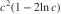
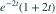

独立同分布，密度为
独立同分布，密度为  （
（ ），
）， 。用 拒绝
。用 拒绝  ，其中 。在备择
，其中 。在备择  下，第二类错误概率为？
下，第二类错误概率为？- A
- B

- C
- D
我已思考，展开答案与解析
正确答案：B
- 备择下 。不拒绝事件为 。
- 形状 2、速率 2 的 Gamma 生存函数为

，代入 得 。
易错提醒第二类错误计算不拒绝概率，并使用备择参数。
JYSG · 432精选 · 册内复旦大学432·2025年·11；第二类错误；PDF第41页（印刷页39）
原题知识点延伸
独立同分布，密度为 （），。用 拒绝 ，其中 。在备择 下，第二类错误概率为？

，代入 得 。JYSG · 432精选 · 册内复旦大学432·2025年·11；第二类错误；PDF第41页（印刷页39）
原题知识点延伸